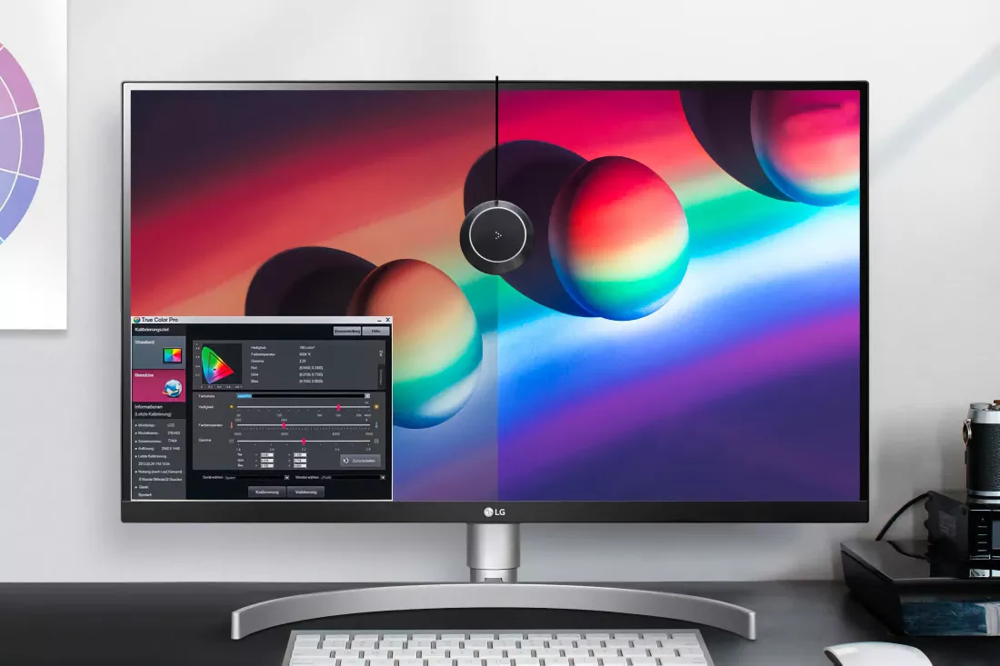

How to Fix Blurry Apps in Windows 11
High-resolution monitors are affordable and commonplace these days, but many applications weren't created with these displays in mind. Using them on such monitors or moving the app's window from a second, low-resolution screen to one that's much higher can lead to a fuzzy appearance and blurry-looking text.
While there is no instant fix for every app that isn't very clear, there are various solutions that you can try to cure those blurry blues for good. Here's our handy guide.
Scaling and DPI
Monitor screens are comprised of millions of tiny dots (a.k.a. pixels) and one measure for how many there are present is known as DPI – dot per inch. Originally, this referred to how many ink dots a printing press would lay down on paper, in one inch of printing.
With computers, it now means how many pixels are used to draw a 1 inch diagonal line on the screen. For many years, Windows has used a standard value of 96 DPI and this was perfectly fine, because the majority of monitors weren't very big or had a high resolution.
For example, a 15-inch screen with a resolution of 1024 x 768 has a DPI of 85, and because this is lower than the value Windows uses, apps will look just fine.
However, you can now get a 27-inch 2560 x 1440 monitor for less than $200. Such a screen has a DPI of around 109 and since that's more dots than what Windows uses by default, every app will be slightly blurry. This is because internally Windows will be trying to draw the shape with a fixed number of dots, but then display it spread out over more dots.
Well, it would be the case if it wasn't for DPI scaling.
For quite a few years, Microsoft has updated Windows to use a variety of tricks to ensure that programs are correctly displayed on monitors with higher DPIs. However, most of these changes are for developers or hidden away from the end user.
Fortunately, there is an option to force Windows to alter the DPI it uses, displaying this as a percentage. At 100%, Windows will use the normal value of 96, but increasing this will everything to use a higher number of dots per inch (e.g. 150% is equal to a DPI of 144).
How to adjust the DPI scaling
Step 1: Press the Windows key + I and then click on the Display section, or click on Start > Settings > System > Display.
Step 2: Scroll down until you see the Scaling option and click on the Menu.You should see a list of values as shown below:
Step 3: If applications look too small or too blurry, increase this value – it's recommended that you don't exceed 150%, unless you have a very high resolution monitor.
Notice how it says 'Recommended' next to 150%? That's because this image was taken using a 27" 4K monitor. If the screen was larger (e.g. 32") then 125% might be a better fit, but it's really down to personal preference.
Using different scaling values will force everything to change in size, though, and not just applications. The taskbar, notification area, and desktop icons will all shrink or grow, too.
The image above shows how the Recycle Bin compares at 100%, 125%, 150%, 175%, and 200% scaling on a 4K monitor. If you look closely, you'll see that the first two options leave the text underneath the icon looking a little blurry (the image has been zoomed in, though).
But remember, if you go too large with the scaling, then you'll lose a lot of room on your taskbar and desktop in general.
How to change the DPI scaling for a single app
If you've set Windows scaling to how you like it, but are still experiencing problems with a specific application (especially an old one), then you'll need to dig deeper to try and fix the issue.
Start by right-clicking on the icon for the app and click on the Properties option...
This will open up a new window, with a variety of tabs along the top – select the one that says Compatibility.
Towards the bottom of the window, you should see a large button that says Change high DPI settings – click this and another window will open up.
This is where you can override the app's behavior when it comes to DPI scaling.
The first option to try is Program DPI and checking this will force Windows to optimize the app's scaling, either when you first log into the operating system or when you launch the program. It's not overly clear exactly what happens with this option, as Microsoft doesn't provide any helpful tips for it.
It's probably best that you select the "When I open this program" option, simply because you might not use the app very often. If you do, though, then by all means select the first choice.
The second option you can try is the bottom one, labeled High DPI scaling override. This gives you three choices: Application, System, and System (Enhanced). If it's a particularly old program, it may well have problems scaling properly, so select the third choice in the list.
You can check both Program DPI and High DPI scaling override to really force Windows to take control over the program's scaling, but more often than not, the first one is enough to get the job done.
As with all things Windows-related, once you've changed the settings, click on the OK button in the two windows still open, and then restart your computer. Hopefully, the recalcitrant app will behave itself now.
Note that this works on "Win32" programs as UWP apps (Universal Windows Platform) scale 100% properly, all of the time, according to Microsoft.
Other settings for making things clearer
DPI scaling is a thorny problem and there's no magic wand that can be waved to fix every problem that might be encountered. So here are some further things you can try, to improve the clarity of everything on your monitor.
Use the highest refresh rate that you can
Older monitors are often limited to a maximum of 60 Hz, but if yours supports higher values, make sure that Windows is set to using the correct value. If the same section of Settings that you adjust the DPI scaling, scroll down to Advanced display.
Here you'll see the option to adjust the monitor refresh rate. Monitors are designed to run perfectly well at their highest rate, so unless you have very good reasons for not doing so, make sure it's set at the maximum value.
Also, ensure you're using the monitor's native resolution – if the screen has 3840 x 2160 pixels, having it set to something else like 2560 x 1600 will definitely make things look blurry.
Make sure graphics drivers are up-to-date
This might seem like an obvious thing, but when AMD, Intel, and Nvidia update their drivers, they often fix a number of small bugs that can affect specific applications – sometimes it's about stability or performance, but occasionally it can be about images or text not displaying properly.
Disable window transparency and animation effects
While these give Windows a nice visual touch, for some users, having a partially transparent background or a fancy animation running when you open or close them, can make things harder to read.
Open up Settings (Win key + I or Start Menu > Settings) and select Accessibility in the left-hand menu. Now choose Visual Effects in the list on the right-hand side of your screen.
You'll see the option to disable transparency and animation effects here, so click them to deactivate the features. You may even notice that Windows feels a little bit snappier with them off if you're using a budget computer.
Adjust ClearType text to suit your monitor
A Windows default feature, ClearType enhances how text appears on LCD monitors by drawing them at the sub-pixel level rather than working with entire dots. How it all works isn't important but as every monitor is different, the standard settings might not be perfect for you.
Click on the Start Menu and type in "ClearType Tuner," and then click on the app shown (it will have a little colored icon next to it). The tuning program first gives you the option to enable ClearType, if it isn't already, followed by which monitors you want to tune it for if you have multiple screens.
Then, you'll go through 5 tests – just like when you're getting your eyes tested by an optician, select the panel that looks the clearest for you, clicking next each time until you've gone through all of the tests. If you're not happy with the results, then go back and try it again a few times until you have everything matched to your monitor.
Hopefully, with this guide, you'll have fixed any pesky apps that have been giving you visual problems. Very old apps may be beyond saving but with luck, they should be few in number.